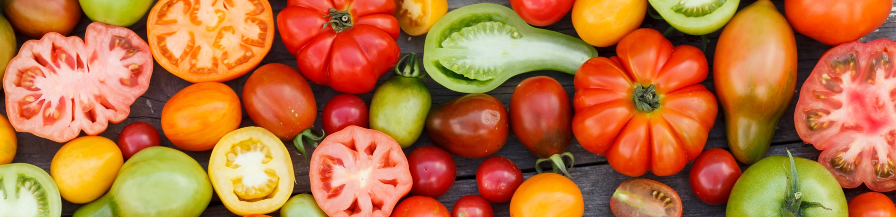

Un légume est la plante ou une partie comestible d'une espèce potagère. Cette définition, reprise par la plupart des dictionnaires de langue française, doit être étendue aux champignons comestibles, dont certains sont cultivés (champignon de Paris, shiitaké, etc.) et à certaines algues, dont la consommation est la plus développée en Extrême-Orient. Cette partie peut être une racine (carotte, betterave rouge), un tubercule (pomme de terre, topinambour), un bulbe (oignon), une jeune pousse (asperge), une pseudo-tige (poireau), un pétiole (bette, céleri), un ensemble de feuilles (laitue, endive), une fleur (artichaut, chou-fleur), un fruit (tomate, concombre), ou une graine (pois, fèves, haricots, etc.)…
